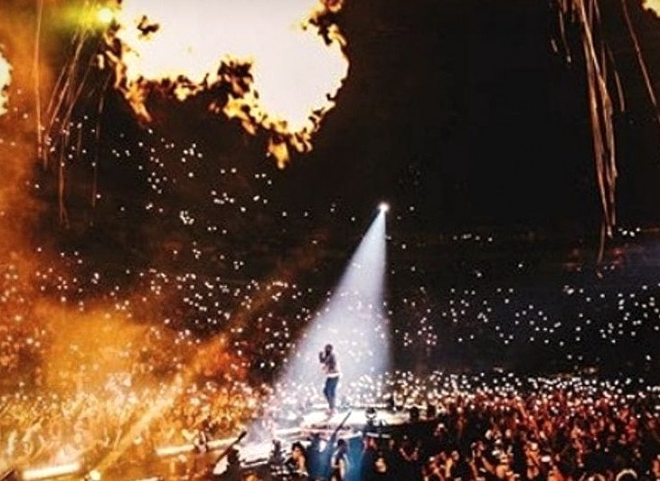
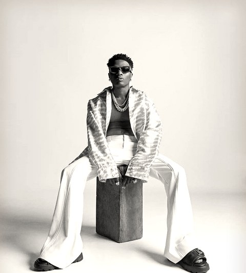

Made in Lagos at six
Wizkid’s fourth album arrived two weeks late, then went on to rewrite Africa’s chart records.

The delayHeld back for Nigeria
Made in Lagos was set for release on 15 October 2020. As the End SARS protests against police brutality spread across Nigeria, Wizkid pushed the release back and dedicated the album to the people of Nigeria.
The dropFourteen tracks at 11:11pm
It went live at 11:11pm Lagos time on 29 October (1:11am in Nairobi), just ahead of its official 30 October date, with guests including Burna Boy, Skepta, Damian Marley, H.E.R., Ella Mai and Terri.

The first weekA first for Africa
It became the first African album to debut on Spotify’s Global Album chart, landing inside the top ten, and passed 100 million streams across five platforms nine days after release.
July 2021Essence makes history
Essence with Tems became the first Nigerian song on the Billboard Hot 100, debuting at No. 82. After a Justin Bieber remix arrived on the deluxe edition that August, it climbed to No. 9.


February 2022A 27-year record falls
It became the longest-charting African album on Billboard’s World Albums chart, passing the 66 weeks held by Cesária Évora’s self-titled album. By 2025 it had logged more than 150 weeks there.

Six years onStill on repeat
It earned two nominations at the 64th Grammys, for Essence and the deluxe edition, and is certified Gold by the RIAA. Which track still runs your playlist?